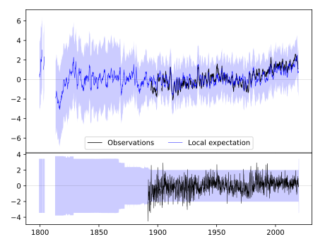
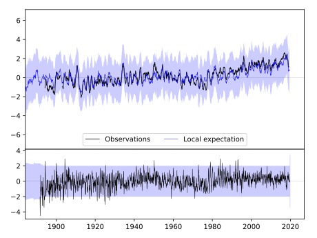
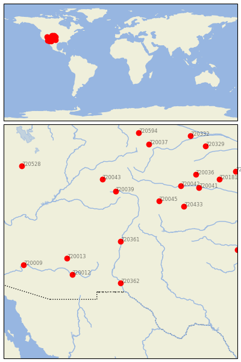

LOS LUNAS 3 SSW [USA]


| Neighbour | Name | Country | Distance | Lon/Lat | Years |
|---|
| 720361 | LOS LUNAS 3 SSW | USA | 0 | -106.8, 34.8 | 1891-2019 |
| 720362 | STATE UNIV | USA | 277 | -106.8, 32.3 | 1892-2019 |
| 720013 | WHITERIVER 1 SW | USA | 314 | -110.0, 33.8 | 1871-2019 |
| 720039 | HERMIT 7 ESE | USA | 334 | -107.1, 37.8 | 1893-2019 |
| 720045 | TRINIDAD | USA | 337 | -104.5, 37.2 | 1886-2019 |
| 720012 | SAFFORD AGRICULTRL C | USA | 348 | -109.7, 32.8 | 1893-2019 |
| 720433 | KENTON | USA | 414 | -103.0, 36.9 | 1893-2019 |
| 720043 | MONTROSE #2 | USA | 422 | -107.9, 38.5 | 1885-2019 |
| 720042 | LAS ANIMAS | USA | 488 | -103.2, 38.1 | 1867-2019 |
| 720041 | HOLLY | USA | 550 | -102.1, 38.0 | 1893-2019 |
| 720009 | BUCKEYE | USA | 556 | -112.6, 33.4 | 1893-2019 |
| 720036 | CHEYENNE WELLS | USA | 598 | -102.3, 38.8 | 1889-2019 |
| 720525 | QUANAH 2 SW | USA | 643 | -99.8, 34.3 | 1891-2019 |
| 720037 | FT COLLINS | USA | 662 | -105.1, 40.6 | 1873-2019 |
| 720181 | SCOTT CITY | USA | 667 | -100.9, 38.5 | 1889-2019 |
| 720528 | DESERET | USA | 723 | -112.7, 39.3 | 1891-2019 |
| 720594 | LARAMIE RGNL AP | USA | 729 | -105.7, 41.3 | 1866-2019 |
| 720183 | WAKEENEY | USA | 770 | -99.9, 39.0 | 1883-2019 |
| 720329 | IMPERIAL | USA | 776 | -101.7, 40.5 | 1890-2019 |
| 720332 | LODGEPOLE | USA | 791 | -102.6, 41.1 | 1893-2019 |